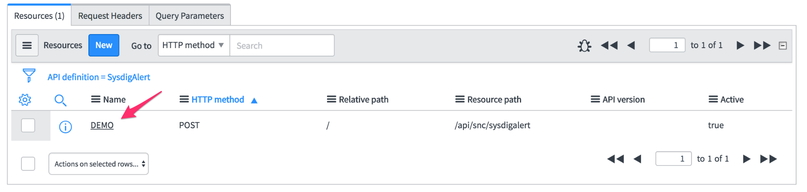
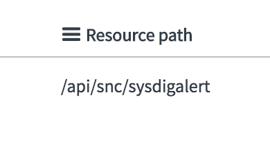
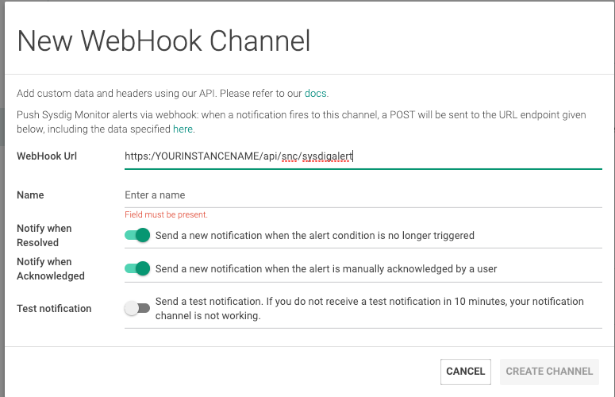
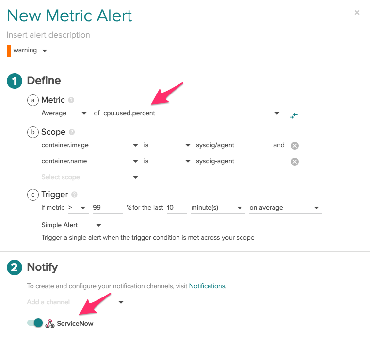
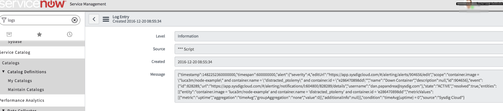

Configure ServiceNow
Sysdig can be integrated with ServiceNow using a custom webhook.
ServiceNowSetup
Prerequisites
Have a ServiceNow account set up and working.
If necessary, refer to ServiceNow developer documentation here.
Create Scripted Rest API Details in ServiceNow GUI
Login to ServiceNow (developer entry) and create a Scripted REST API:

Click
Newand submit the form with the following:Name: SysdigAlert API ID: sysdigalert
Return to the
Scripted REST APIsand open the resource just created.Scroll down to the related list area, select
Resources, and clickNew. This will create a new Scripted REST API resource.Fill in the
Namefield e.g. Demo. Scroll down to
Securityand clear the checkbox that requires authentication.
Change the
HTTP methodfrom GET to POST.
The resource is created.
Add Code to the New Scripted API
Now give the resource the code to execute.
The default objects to work with in a Scripted REST API Resource are response and request.
For more details on request and response see Scripted_REST_Request_API and Scripted_REST_Response_API
The created resource will already have some example code:
(function process(/*RESTAPIRequest*/ request, /*RESTAPIResponse*/ response) {
// implement resource here
})(request, response); Change this default code to:
(function process(/*RESTAPIRequest*/ request, /*RESTAPIResponse*/ response) { gs.info(request.body.dataString); })(request, response);Note the following resource path to this newly created resource is now visible: /api/snc/sysdigalert.
The url to this resource would be https://yourInstance.service-now.com/<resource_Path or https://yourInstance.service-now.com/api/snc/sysdigalert
 Click Submit/Update on this resource.
Sysdig Webhook Setup
Now that the custom API endpoint in ServiceNow is created, you can configure Sysdig alerts to use a custom webhook to trigger the ServiceNow integration.
API URL: your instance name URL
Name: ServiceNow (or whatever name you'd like for this Sysdig alert webhook)
Notify when OK: Optional
Notify when Resolved: Optional
Test Notification: Use this toggle and/or set up a test alert as described in the following section.
|  |
Test Integration
To test if this ServiceNow integration is set up and working correctly, you can set up a test alert to trigger.
For example, you could create an alert for CPU usage:
|  |
In ServiceNow, navigate to System Log > All to see a sample triggered webhook.
|  |